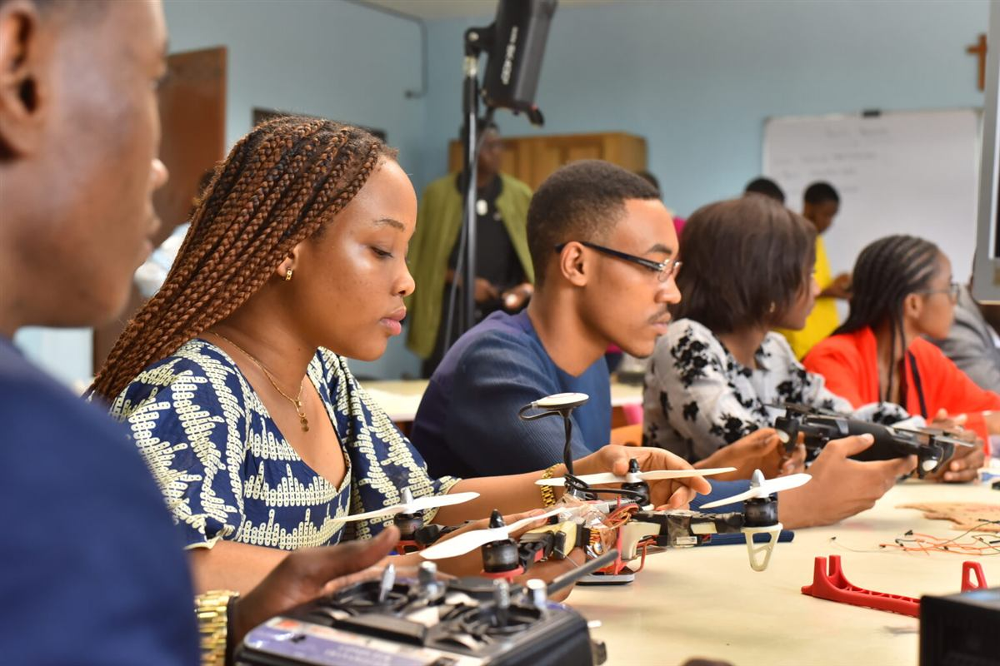
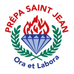
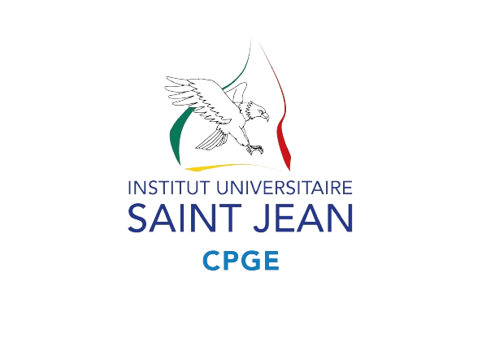
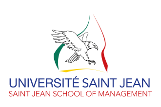
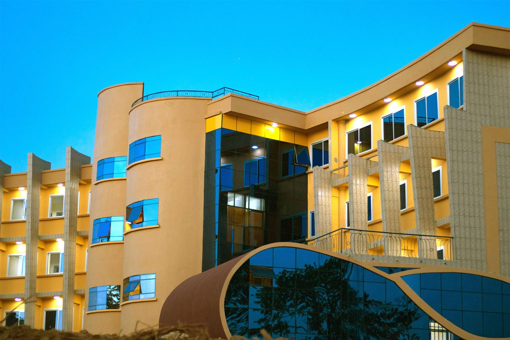

Admissions
Classes préparatoires aux concours des Grandes Écoles (CPGE)
Formation intense en 2 ans à Yaoundé, ouverte aux bacheliers scientifiques avec mention Très Bien ou Bien.
En savoir plus →For an inspiring future
Première école à proposer un Programme Grande École de Finance et de Management au Cameroun — fondée par les Frères de Saint Jean.
Adossée à 35 ans d'excellence éducative des Frères de Saint Jean, SJM forme des managers compétents, intègres et tournés vers le monde — de la classe préparatoire au premier emploi.
Fondé en 2021 par les Frères de Saint Jean — qui dirigent le Collège FX Vogt depuis 35 ans — l'Institut Universitaire Saint Jean du Cameroun (IUSJC) réunit aujourd'hui 5 écoles et 3 campus autour d'une même exigence.
Un accompagnement de bout en bout : de la classe préparatoire au premier emploi, en passant par la mobilité internationale.
Un parcours Licence → Master construit sur le modèle des grandes écoles de management, avec préspécialisations et filières de spécialisation.
Écoles et universités partenaires dans le monde, doubles diplômes, mobilité sortante et parcours internationaux dès la Licence.
Un Service des Relations Entreprises et Stages qui accompagne chaque étudiant vers l'insertion professionnelle, dès le premier stage.
Licence / Bachelor puis Master / MSc, avec stages accompagnés et mobilité internationale dès la 4ᵉ année.
Pour les professionnels détenteurs d'un Master ou d'une Licence LMD justifiant d'une expérience professionnelle.
Des classes préparatoires aux écoles diplômantes, un parcours cohérent au sein de l'IUSJC.



L'IUSJC regroupe en 2025 1 400 étudiants répartis dans 5 écoles et 3 campus — une même exigence académique portée par les Frères de Saint Jean depuis 35 ans.Institut Universitaire Saint Jean du Cameroun
Saint Jean School of Management est la première école à proposer un Programme Grande École de Finance et de Management au Cameroun, créée par arrêté du MINESUP en 2022.Saint Jean School of Management
Nos étudiants sont accompagnés du premier stage à l'insertion professionnelle par le Service des Relations Entreprises et Stages, avec des mobilités internationales dès la 4ᵉ année.Service des Relations Entreprises et Stages

Formation intense en 2 ans à Yaoundé, ouverte aux bacheliers scientifiques avec mention Très Bien ou Bien.
En savoir plus →
Étude de dossiers, épreuves écrites et orales pour intégrer le premier Programme Grande École du Cameroun.
En savoir plus →Ouvert aux titulaires d'un Master (ou d'une Licence LMD avec expérience) souhaitant accélérer leur carrière.
En savoir plus →